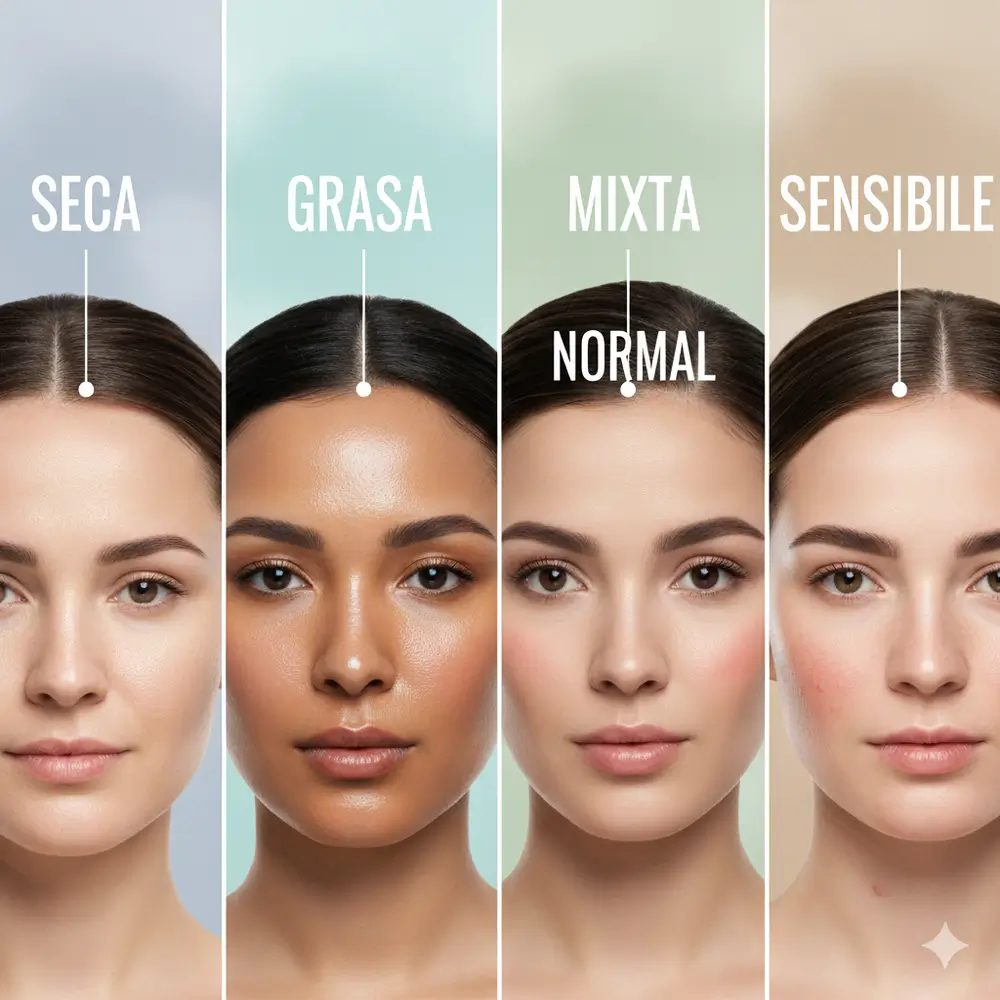

Cómo Identificar tu Tipo de Piel Correctamente
Publicado el por Gaia

Conocer el tipo de piel es el primer paso indispensable antes de aplicar cualquier rutina de cuidado facial. Dependiendo de si tu piel es seca, grasa, mixta o sensible, requerirá de ingredientes activos y texturas completamente diferentes para mantenerse saludable.
Pasos para realizar la prueba en casa
- Lava tu rostro con un limpiador suave y sécalo con palmaditas sin frotar.
- Espera entre 30 y 60 minutos sin aplicar ningún producto ni crema hidratante.
- Observa cómo se siente tu piel y utiliza un pañuelo facial para presionar diferentes zonas del rostro.
Comparativa de tipos de piel y sus necesidades
| Tipo de Piel | Característica Principal | Ingrediente Ideal |
|---|---|---|
| Piel Seca | Sensación de tirantez y descamación frecuente | Ácido Hialurónico |
| Piel Grasa | Brillo excesivo y tendencia a poros dilatados | Niacinamida |
| Piel Sensible | Reacciones fáciles, rojeces e irritación frecuente | Aloe Vera / Centella Asiática |
| Piel Mixta | Zona T grasa (frente y nariz) y mejillas normales o secas | Ácido Salicílico / Té Verde |